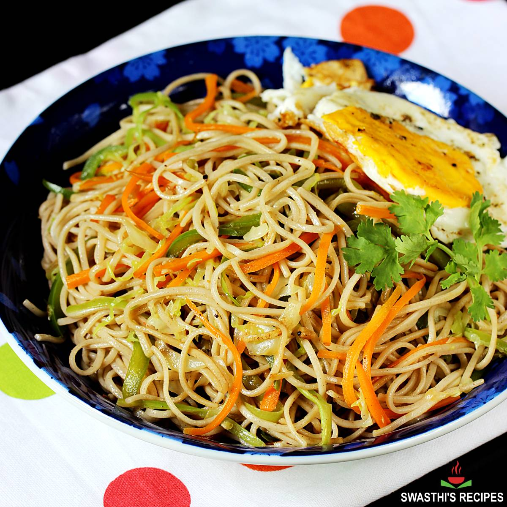

Ingredients List
For Cooking Noodles
- 2 hakka noodles
- hot water
- 2 tsp oil
For Sauce
- 2 tbsp oil
- 4 cloves garlic, finely chopped
- 1 inch ginger, finely chopped
- 2 chilli
- ½ onion, sliced
- ½ carrot, julienne
- ½ cup cabbage, julienne
- 5 beans, chopped
- ½ capsicum, julienne
- ½ tsp salt
- 2 tsp chilli sauce
- 2 tsp tomato sauce
- 2 tsp schezwan sauce
- 2 tsp vinegar
- 2 tsp soy sauce
- ½ tsp pepper powder
- spring onion, chopped
Step-by-Step Instructions
- Firstly, in a bowl take 2 hakka noodles and soak in hot water for 5 minutes. Make sure to check the package instructions to know the cooking time.
- Drain off the noodles and rinse with cold water.
- Spread in a plate and coat with 2 tsp oil. Keep aside.
- In a wok heat 2 tbsp oil. Stir fry 4 cloves of garlic, 1 inch of ginger and 2 chillies.
- Stir-fry ½ onion on a high flame.
- Now add ½ carrot, ½ cup cabbage, 5 beans, ½ capsicum and ½ tsp salt.
- Stir-fry till the vegetables turn crunchy.
- Now add in boiled noodles, 2 tsp chilli sauce, 2 tsp tomato sauce, 2 tsp schezwan sauce, 2 tsp vinegar, 2 tsp soy sauce and ½ tsp pepper powder.
- Stir-fry until the sauce is well-coated with the noodles.
- Finally, add spring onion and enjoy your noodles.